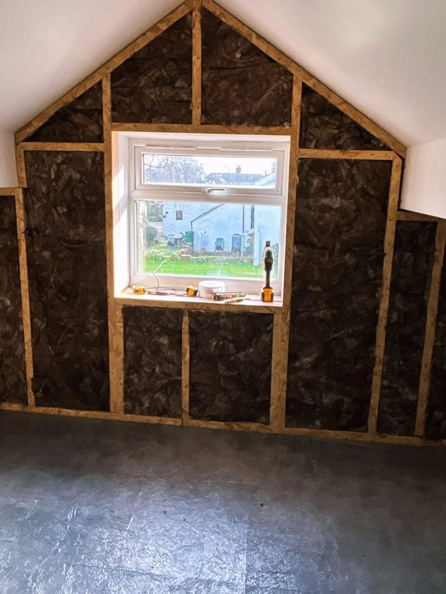

HOME INSULATION · NORTH WEST
Warmer homes.
Job done right.
Loft insulation, loft boarding, internal wall insulation and room-in-roof insulation across the North West.
JOB DONE RIGHT
Get more from the home you have.
From a cold upstairs room to a loft you want to use for storage, JDR helps you work out where to start and which improvements suit your property.
Talk through your project

FEATURED PROJECT
What goes behind the finish.
Two stages of the same loft room: insulation fitted around the window, then the membrane fitted over it.


JDR PROJECT GALLERY
See the work up close.
COMMON QUESTIONS
Before you get in touch.
Can you help if I already have loft insulation?
Tell us what’s already fitted. Photos of the loft and access hatch are useful if you can take them safely.
Can I ask about both insulation and boarding?
Yes. Tell us how you plan to use the loft so we can discuss insulation and storage together.
Where do you work?
We cover the North West. Send your postcode so we can confirm availability.
REQUEST A QUOTE
Let’s talk about your home.
Tell us your postcode, which room or loft you’d like to improve. You can add photos in WhatsApp before you send your message.